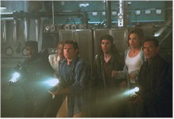
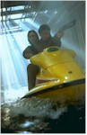

Another in a string of dreary January releases, this title could be about the discovery of Chicago deep-dish pizza, but is actually about good guys vs. bad guys vs. sea monster. Deep Rising makes a valiant attempt to become the South China Seas' answer to the Bermuda Triangle, but off-the-shelf acting and a hackneyed plot won't keep this oversized barge afloat. Maybe all the people who have seen Titanic ten times will want to give this film their attention, but any comparisons are bound to be disappointing. Even the creature designed by Rob Bottin (noted for his work on Total Recall and Robocop) reminds me of giant phlegm. How enticing!
Forty-six-year-old Treat Williams (looking much younger) has been trying for decades to find the high energy he garnered for his role as New York Detective Daniel Ciello in Prince of the City (1981). Regrettably, here's another take charge role that sinks under poor writing. As the scruffy but cool-headed John J. "Finn" Finnegan

, he is captain of the Saipan, a ramshackle speedboat that, much like the Millennium Falcon, can't seem to make the jump past lightspeed as it struggles with its second-hand equipment amid a raging storm. Along with his handy mechanic Chewbacca, er, Pantucci (Kevin J. O'Connor) and a soon-to-depart first mate (Uma Damon), the crew is ferrying a group of secretive international mercenaries from the middle of nowhere to the middle of nowhere. In a series of cross-cut sequences we are simultaneously introduced to the maiden voyage of the exotic luxury gambling liner Argonautica, a love boat for the fabulously wealthy. So we know what the bad guys, lead by Hanover (Wes Studi, who you may remember as Magua in The Last of the Mohicans or from Dances with Wolves), are after and soon Finn does too, as the ever-prying Pantucci discovers advanced Chinese assault weaponry and torpedoes in the hold. Here's the first script boo-boo: why hire a boat when you could buy one and not bother with the likes of Finn and crew discovering your ulterior motives. Oops.Back on big boat we follow the mysterious, red-headed, bumble-gum-popping jewel thief Trillian (former 007 beauty Famke Janssen). Caught red-handed robbing the ship's vault, she is imprisoned in a makeshift brig. After someone sabotages the ship's mainframe (the well-financed commando raid suggests just one possible suspect as the inside man), the captain (Derrick O'Connor) and his frantic crew, baffled by the ship's shutdown, prove helpless when something bigger than Moby Dick and certainly not as sweet as the Little Mermaid attacks their charge. A dislodged life boat from the Argonautica incapacitates the Saipan, and before you can say "the good ship Lollipop," Hanover and gang are aboard the cruiser, now dead in the water and ghostly empty. As they muck around for answers, they uncover Trillian, the captain, and Canton (Anthony Heald), nerd owner of the ship.
The ranks of the survivors grow thin one by one as they are caught unaware and dragged to a gruesome death through the encroaching sea waters. Director of Photography Howard Bretherton (Fatal Attraction) does add a sense of urgency, playing light, steam, and shadow around the bowels of the ship, but his efforts are not enough to plug the holes in the script. Yeah, back to the screenplay. Another bug-a-boo: if the mainframe is fried and most of the power out, why are the elevators running and playing musak? Yeah, it's good for a chuckle (you can catch this joke in one of the preview trailers), but it kept me squirming from lack of belief.
And for the weak-stomached few who wander into this film, there are some real yucky moments, as the dearly departed are not really eaten alive, but drunk alive for later digestion. Hey, there's one group of technicians credited for their work on "Half-Digested Billy." You get the idea.

The final explosive climax is forestalled as Canton stalks Finn, Pantucci, and Trillian for his own demented reasons. A jet ski sequence mirrors one used in Hard Rain (as does the heavy use of rain and water) and as there are only a few more days left in January, there should be no more films this month with Sea-Doo chases to bother us. Heck, I would have taken one of the lifeboats to the island discovered nearby. But I didn't write this bowl of decaying sushi. As the camera draws back when our trio arrive safe on shore, we learn they are not alone. Another sequel? Not a chance. Deep Rising falls flat.